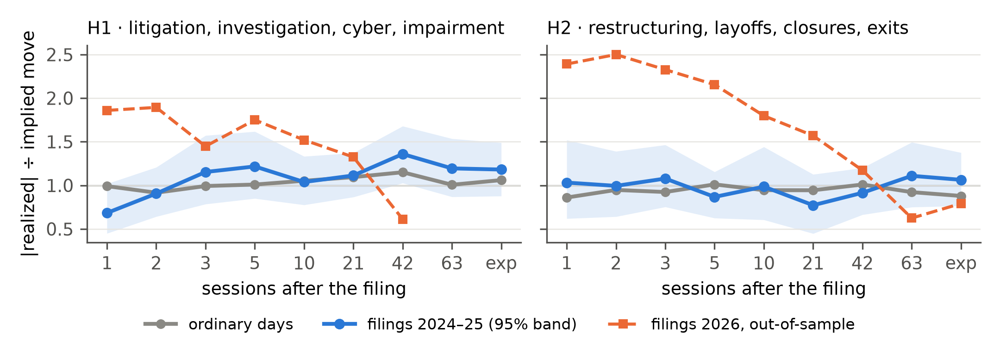

PolyBridge · Jacob Crainic and Theo Machado · Gator Quant Hacks 2026, Massive “Trade the 8-K” challenge · notebook research/massive_8k.ipynb
We test when an option chain misprices a corporate headline, not only whether. Both hypotheses, the 11 tags, the pass rule and the forecast were committed to git before any event or price was fetched (HYPOTHESIS.md, HYPOTHESIS_TAGS.md, 2 Oct; FORECAST.md, 3 Oct).
Each makes two predictions: a P&L edge, and a sign on the parity ratio R = |realized move| ÷ implied move (H1 above ordinary days, H2 below). Requiring both rules out being merely long or short volatility in a busy or calm year.
Massive’s starter pipeline: top-100 list, fixed horizons, put-call-parity spot, 3–6-month expiries, puts 5% out of the money. One event per filer per filing date; 5 filings carrying tags from both families are dropped from both tests. Entry is conservative: every filing is treated as public after the close, so the trade enters at the close of the next session (no look-ahead from intraday filings). Baseline: 120 ordinary days per family for the same companies, at least 30 days from any of their events. Pass rule: a 97.5% bootstrap interval (95% split over two tests) on the event-minus-ordinary-day edge lies above zero at 2 or more of 21 sessions, 42 sessions and expiry, with R moving the predicted way at those horizons. Fewer than 2 testable headline horizons is reported as INSUFFICIENT. In-sample 2024–2025; out-of-sample January–August 2026, run once after the method freeze, exits pinned to 2 October 2026.
| Sessions | H1 in-sample (n 28–33) | H1 out-of-sample | H2 in-sample (n 23–24) | H2 out-of-sample (n 7) |
|---|---|---|---|---|
| 1 | −0.22 [−0.63, +0.19] | 3 events: no interval | −0.25 [−0.52, −0.02] | +0.23 [−0.54, +1.03] |
| 2 | −0.16 [−1.00, +0.59] | −0.17 [−0.51, +0.12] | +0.28 [−0.35, +1.05] | |
| 3 | +0.08 [−1.09, +1.18] | −0.22 [−0.73, +0.21] | −0.01 [−0.77, +0.91] | |
| 5 | −0.13 [−1.90, +1.75] | −0.08 [−0.53, +0.33] | +0.01 [−1.52, +1.44] | |
| 10 | −0.46 [−2.56, +1.65] | +0.05 [−0.62, +0.79] | −0.64 [−2.79, +1.37] | |
| 21 | +0.07 [−2.70, +2.91] | +0.09 [−0.68, +0.89] | −2.15 [−7.59, +2.03] | |
| 42 | +0.49 [−4.51, +5.77] | +0.21 [−0.90, +1.36] | −1.38 [−7.29, +2.60] | |
| 63 | +3.19 [−2.65, +9.14] | +0.65 [−0.32, +1.69] | +3.37 [−4.27, +10.53] | |
| Expiry | +3.33 [−3.01, +10.12] | +0.92 [−0.36, +2.34] | 4 events: no interval |
Table 1. Edge of the pre-registered strategy, events minus ordinary days for the same names, in % of the stock price at entry, with 97.5% bootstrap intervals; bold rows are the headline horizons. Every fixed horizon is shown.
Verdicts. In-sample, both are NULL: no headline interval excludes zero, although R moved the predicted way at all three headline horizons for H1 and at 21 and 42 for H2. Out of sample, H1 is INSUFFICIENT (3 events) and H2 is NULL with its sign reversed at the headline horizons. What the nulls bound: over 2024–2025 a protective put after an H1 filing did not beat ordinary days by more than about 3% of the stock price at 21 sessions, and a short put after an H2 filing was not over-priced by more than about 0.9%.

Figure 1. The yardstick: |realized move| ÷ implied move from the chain on the session before the filing (1 = priced right). In-sample H1 has the predicted shape (0.68 at 1 session against 0.99 on ordinary days; 1.36 against 1.15 at 42), inside its band. Out of sample, H2 filings moved 2.2–2.5 times the implied move in the first week (interval above 1 at 3 and 5 sessions, 7 events): the opposite of H2’s mechanism.
Sensitivity (21 sessions, tradeable entry, expiry bucket × OTM distance of 3%, 5%, 10%): the H2 edge is positive in 9 of 9 cells (+0.08% to +1.24%) and H1 in 7 of 9 (−0.67% to +0.68%); cells share events, so this shows a stable sign, not 9 results. Category definition (exploratory per-tag atlas, at most 15 events a tag, shared placebo): no H1 tag has an interval above zero; restructuring_plan × cash-secured put is positive at 21, 42 sessions and expiry (+2.57% [+0.95, +4.51] at expiry, 14 events, q = 0.014), a lead for a new pre-registered test, not a result. Company-clustered intervals and the put leg alone change no verdict.
The samples are small (24 to 36 events per family in-sample, 3 and 7 out of sample), the top-100 list is today’s (survivorship), spot is inferred from put-call parity, and marks are daily last trades. A litigation or cyber wave would add power and could change the verdict. Before running any window outside 2024–2025 we committed a forecast (FORECAST.md). Out of sample it got “no pass” for both and the H2 count right (about 8; 7 arrived), and missed the H1 count (about 11; 3 arrived, so INSUFFICIENT rather than the NULL it expected), the interval widths (2–3 times wider) and all three signs it could score. For the sealed window it predicts: a 3-month window gives about 4 H1 and 3 H2 events, so INSUFFICIENT for both; 4–5 months NULL or INSUFFICIENT; 6 months or longer NULL for both. A PASS would contradict it. The notebook prints it beside the sealed-window verdict.
We would not trade either rule. The trade as specified: buy the 5%-out-of-the-money 3–6-month put (H1), or sell it cash-secured (H2), at the close of the session after the filing, and exit at 21 sessions. Costs: a 5% premium haircut each way is 28–29 bp of the stock price at 21 sessions, and real half-spreads where quotes exist are 26–29 bp; net of the haircut the edge over ordinary days is +11 bp for both families, inside the noise. Liquidity and capacity: the median put traded 34 (H1) and 49 (H2) contracts on the entry day, so at 10% participation a desk fills 3–5 contracts an event, about $0.1 million of stock notional, on 1.3 H1 and 1.0 H2 events a month. What a portfolio manager can use: after these filings, buying protection at the next close does not overpay by more than the bounds above, so a holder who wants the hedge need not wait for implied volatility to fall. Next test, on a fresh window with power to detect a 0.5% edge: restructuring_plan × cash-secured put, and H2 entry a few sessions after the filing, once the first-week move (Figure 1) has passed.